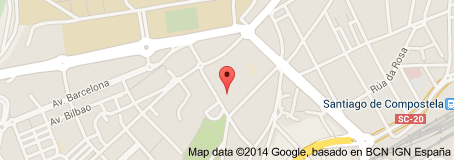

Nacido el 27/01/1970 en Santiago de Compostela
Ciclo Superior Electricidad y Electronica, entre los años:
1990-1991
1992-1993
1993-1994
Centro de Estudios Eduardo Pondal
Docente: Mariano

Voltio Watio
Docente: Isaac Ampeo
Docente: Albert Gutierrez